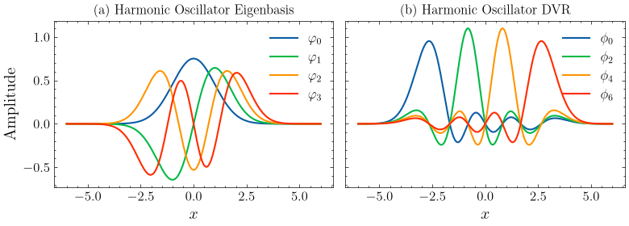
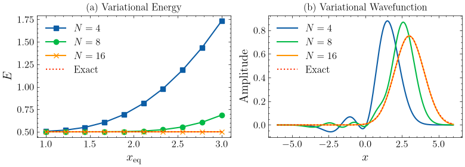

Nuclear Basis Set¶
Overview¶
In this notebook, we will introduce the basics of nuclear basis sets. We will start from harmonic oscillator eigenbasis and then introduce discrete value represetation (DVR). In the end we will present the variational calculation of the ground state energy and wavefunction of a displaced harmonic oscillator. The purpose of this notebook is to elaborate the basic funtionality of the nuclear basis set. Tensor network algorithms are not covered in this notebook.
The basis sets¶
The harmonic eigenfunctions are
where \(\nu\) is the energy level or the quantum number，\(H_\nu(\xi)\) is the Hermite polnomial, \(\xi=\frac{x}{\alpha}\) is the unitless coordiate，\(\alpha=\sqrt{\frac{\hbar}{m\omega}}\)，\(N_\nu = \sqrt{\frac{1}{\alpha 2^\nu \nu! \pi^{\frac{1}{2}}}}\) is the normalization constant. We will use \(\hbar=m=\omega=1\) throughout this notebook.
[1]:
from math import factorial
from renormalizer import Op, Model, Mpo, BasisSHO, BasisSimpleElectron
from renormalizer.utils.log import set_stream_level, INFO
set_stream_level(INFO)
import numpy as np
from scipy.special import eval_hermite as hermite
from matplotlib import pyplot as plt
plt.style.use("mm.mplstyle")
2026-10-14 01:46:09,932[INFO] Use numpy as backend
2026-10-14 01:46:09,935[INFO] numpy random seed is 9012
2026-10-14 01:46:09,936[INFO] backend random seed is 2019
2026-10-14 01:46:09,936[INFO] random seed is 1092
2026-10-14 01:46:09,944[INFO] Git Commit Hash: 3507afde83fd6f408c1c2198aad4dfe455d88312
[2]:
omega = 1
[3]:
# calculate and store the lowest 16 wavefuntions for the following visualization
limit = 6
xi = np.linspace(-limit, limit, 10000)
psi_list = []
for nu in range(16):
n = np.sqrt(1/(2**nu*factorial(nu)*np.pi**0.5))
psi = n * hermite(nu, xi) * np.exp(-xi ** 2/ 2)
psi_list.append(psi)
We first plot the wavefuntion of the lowest 4 states. Then we plot the DVR from the lowest 7 states. DVR states are eigenstates of the position operator. 4 out of 7 DVR states are plotted for clarity. The DVR transformation matrix is calculated by the BasisSHO class.
[4]:
n_basis = 7
basis = BasisSHO(0, omega=omega, nbas=n_basis, dvr=True)
fig, axs = plt.subplots(1, 2, figsize=(8, 3), sharey=True)
plt.sca(axs[0])
for i in range(4):
plt.plot(xi, psi_list[i], label=r"$\varphi_" + str(i) + "$")
plt.title("(a) Harmonic Oscillator Eigenbasis")
plt.xlabel("$x$")
plt.ylabel("Amplitude")
plt.legend()
plt.sca(axs[1])
for i in range(n_basis):
phi = basis.dvr_v[:, i] @ np.array(psi_list)[:n_basis]
# adjust the phase for clarity
if phi[np.argmax(np.abs(phi))] < 0:
phi = -phi
if i % 2 == 0:
plt.plot(xi, phi, label=r"$\phi_" + str(i) + "$")
plt.title("(b) Harmonic Oscillator DVR")
plt.xlabel("$x$")
plt.legend()
plt.tight_layout()
plt.savefig("sho.pdf")
plt.show()

Variational calculation¶
We variationally calculate of the ground state energy and wavefunction of a displaced harmonic oscillator using the BasisSHO basis set. The Hamiltonian is written as
In second-quantization, it is written as
where \(g=-\sqrt{\frac{m\omega}{2}} x_{\textrm{eq}}\) and \(E_{\textrm{shift}}=\frac{1}{2}m\omega^2x_{\textrm{eq}}^2+\frac{1}{2}\omega\) are constants.
We label the DOF of this nuclear coordiate as 0, and construct the Hamiltonian using the Op class. The Hamiltonian matrix is calculated by constructing an MPO with only 1 site.
We perform the calculation at several different values of \(x_{\textrm{eq}}\) and the number of basis in the basis set.
[5]:
e_list = []
wfn_list = []
nbas_list = [4, 8, 16]
x_eq_range = np.linspace(1, 3, 10)
for n_basis in nbas_list:
e_list.append([])
for x_eq in x_eq_range:
g = -np.sqrt(omega/2) * x_eq
ham = omega * Op(r"b^\dagger b", 0) + g * omega * Op("b^\dagger+b", 0)
constant = omega / 2 + omega ** 2 * x_eq ** 2 / 2
basis = [BasisSHO(0, nbas=n_basis, omega=omega)]
model = Model(basis, ham)
h = Mpo(model).todense()
evals, evecs = np.linalg.eigh(h)
e = evals[0]
e_list[-1].append(e + constant)
if x_eq == x_eq_range[-1]:
wfn_list.append(evecs[:, 0])
When \(x_{\textrm{eq}}\) is small, say 1, we see that using 4 basis states are enough for accurate result. However, when \(x_{\textrm{eq}}\) increases to around 3, using 4 basis states has a large error. If we employ 16 basis states instead, the error is suppressed. We expect that even more states will be required if \(x_{\textrm{eq}}\) continues to increase.
[6]:
fig, axs = plt.subplots(1, 2, figsize=(8, 3))
plt.sca(axs[0])
labels = [f"$N={i}$" for i in nbas_list]
markers = ["s", "o", "x"]
for i in range(3):
plt.plot(x_eq_range, e_list[i], label=labels[i], marker=markers[i])
plt.plot(x_eq_range, np.ones(len(x_eq_range)) * 0.5, label="Exact", linestyle=":")
plt.xlabel(r"$x_{\textrm{eq}}$")
plt.ylabel("$E$")
plt.title("(a) Variational Energy")
plt.legend()
plt.sca(axs[1])
for i in range(3):
phi = wfn_list[i] @ psi_list[:nbas_list[i]]
if phi[np.argmax(np.abs(phi))] < 0:
phi = -phi
plt.plot(xi, phi, label=labels[i])
n = np.sqrt(1/(np.pi**0.5))
plt.plot(xi, n * hermite(0, xi-3) * np.exp(-(xi-3) ** 2/ 2), linestyle=":", label="Exact")
plt.xlabel("$x$")
plt.ylabel("Amplitude")
plt.title("(b) Variational Wavefunction")
plt.legend()
plt.tight_layout()
plt.savefig("sho_variational.pdf")
plt.show()

Notes on the truncation level or number of basis states¶
In tensor network calculations, the number of basis functions for each phonon mode is another parameter that must be checked for convergence manually. A common starting point is to set this number to 16.
At zero temperature, the required number of basis functions is primarily determined by the coupling strength.
If there are a lot of different modes in the model, setting the number of basis states to the same number can be inefficient. An empirical and usually safe estimate of the number of basis states, adaptive to the coupling strength, is given by
where \(c\) is the coupling strength constant in coupling terms such as \(cx\sigma_z\). Note that \(c^2/2\omega^3\) is the Huang–Rhys factor.
At finite temperature, temperature also influences the required basis size: higher temperatures generally require more basis functions.
Nuclear basis sets in Renormalizer¶
BasisSHO¶
The most commonly used nuclear basis set is BasisSHO, which has been demonstrated above. The basis set is best used with second-quantization. If the nuclear DoF is a harmonic oscillilator, using BasisSHO usually shows fastest convergence of the number of bases, particularly for high frequency or low coupling-strength modes. In these cases, using 4 bases is sometimes sufficient to obtain very accurate result. Besides, the ground state can be easily specified as [1, 0, 0, ..., 0].
Basic Usage¶
In the following we employ nbas=4 for demonstration purposes. As mentioned above usually 16 bases are a good starting point for production calculation.
[7]:
omega = 2
basis = BasisSHO(0, omega=omega, nbas=4)
basis.op_mat("b^\dagger b")
[7]:
array([[0., 0., 0., 0.],
[0., 1., 0., 0.],
[0., 0., 2., 0.],
[0., 0., 0., 3.]])
[8]:
basis.op_mat("b^\dagger+b")
[8]:
array([[0. , 1. , 0. , 0. ],
[1. , 0. , 1.41421356, 0. ],
[0. , 1.41421356, 0. , 1.73205081],
[0. , 0. , 1.73205081, 0. ]])
The operators supported by the basis set include "b^\dagger b", "b^\dagger+b", "b^\dagger-b" and so on.
The basis set also supports first-quantized operators, following
[9]:
basis.op_mat("x")
[9]:
array([[0. , 0.5 , 0. , 0. ],
[0.5 , 0. , 0.70710678, 0. ],
[0. , 0.70710678, 0. , 0.8660254 ],
[0. , 0. , 0.8660254 , 0. ]])
The mass is assumed to be 1, or scaled into \(x\).
The energy operator in terms of \(x\) and \(p\) is given by
or the following code
[10]:
basis.op_mat("p^2")/2 + 1/2 * omega** 2 * basis.op_mat("x^2")
[10]:
array([[1., 0., 0., 0.],
[0., 3., 0., 0.],
[0., 0., 5., 0.],
[0., 0., 0., 7.]])
DVR basis¶
To use grid basis (DVR) based on BasisSHO, set dvr=True. The x matrix then becomes diagonal.
[11]:
basis = BasisSHO(0, omega=omega, nbas=4, dvr=True)
basis.op_mat("x")
[11]:
array([[-1.16720711, 0. , 0. , 0. ],
[ 0. , -0.37098189, 0. , 0. ],
[ 0. , 0. , 0.37098189, 0. ],
[ 0. , 0. , 0. , 1.16720711]])
The grid points are accessible from basis.dvr_x
[12]:
basis.dvr_x
[12]:
array([-1.16720711, -0.37098189, 0.37098189, 1.16720711])
In DVR basis, the Hamiltonian matrix is not diagonal anymore.
[13]:
h_mat = basis.op_mat("p^2")/2 + 1/2 * omega** 2 * basis.op_mat("x^2")
h_mat
[13]:
array([[ 4.31649658, -1.07735027, -0.07735027, 0.31649658],
[-1.07735027, 2.68350342, -1.31649658, -0.07735027],
[-0.07735027, -1.31649658, 2.68350342, -1.07735027],
[ 0.31649658, -0.07735027, -1.07735027, 4.31649658]])
However, we can still reliably obtain the low-energy spectrum
[14]:
np.linalg.eigvalsh(h_mat)
[14]:
array([1., 3., 5., 5.])
With dvr=True, second-quantized operators such as "b^\dagger + b" become ill-defined. Do not mix DVR with second-quantization.
Note that when dvr=True, the ground state is not [1, 0, 0, ..., 0] anymore. You need to compute the wavefunction amplitudes on the grid points basis.dvr_x.
Dimensionless coordinate and momentum¶
By default, the coordinate \(x\) and momentum \(p\) in Renormalizer and BasisSHO are dimensional.
Sometimes, it is desirable to use dimensionless \(x\) and \(p\) by scaling with \(\omega\)
The Hamiltonian is then expressed as
which shows a closer connection to the second-quantized form.
To scale \(x\) and \(p\) with \(\omega\), such that the Hamiltonian can be written as \(\frac{\omega}{2}(p^2+x^2)\), set scale_omega=True when intializing the basis set.
[15]:
basis = BasisSHO(0, omega=omega, nbas=4, dvr=True, scale_omega=True)
# The harmonic oscillator Hamiltonian with the dimensionless x and p
h_mat = 1/2 * omega * (basis.op_mat("p^2") + basis.op_mat("x^2"))
np.linalg.eigvalsh(h_mat)
[15]:
array([1., 3., 5., 5.])
The effect is the same as setting omega=1 when creating the BaisSHO instance.
[16]:
basis = BasisSHO(0, omega=1, nbas=4, dvr=True)
# The harmonic oscillator Hamiltonian with the dimensionless x and p
h_mat = 1/2 * omega * (basis.op_mat("p^2") + basis.op_mat("x^2"))
np.linalg.eigvalsh(h_mat)
[16]:
array([1., 3., 5., 5.])
BasisSineDVR¶
BasisSineDVR is a basis based on particle-in-a-box. By default, BasisSineDVR is not a grid basis, because it uses the sin function as the basis, and the \(x\) matrix is not diagonal. Set dvr=True such that the \(x\) matrix becomes (approximately) diagonal.
BasisSineDVR is best used with first-quantization and complicated nuclear potential.
Usually, BasisSineDVR requires > 16 bases for reasonable numerical result. Note that usually you must carefully specify the initial state.
[17]:
from renormalizer import BasisSineDVR
# particle in a box. Range of grid is -3 to 3 with 16 grid points.
basis = BasisSineDVR(0, nbas=16, xi=-3, xf=3, dvr=True)
The grid points for the DVR basis can be accessed via dvr_x
[18]:
basis.dvr_x
[18]:
array([-2.64705882, -2.29411765, -1.94117647, -1.58823529, -1.23529412,
-0.88235294, -0.52941176, -0.17647059, 0.17647059, 0.52941176,
0.88235294, 1.23529412, 1.58823529, 1.94117647, 2.29411765,
2.64705882])
The following cell numrically solves the quantum harmonic oscillator using BasisSineDVR
[19]:
h_mat = basis.op_mat("p^2")/2 + 1/2 * omega** 2 * basis.op_mat("x^2")
np.linalg.eigvalsh(h_mat)
[19]:
array([ 1.00000014, 3.00000478, 5.00007562, 7.00073986, 9.00498407,
11.02437122, 13.0895611 , 15.25579691, 17.59098891, 20.15271789,
22.97765728, 26.07693738, 29.49028804, 33.14265301, 38.673214 ,
42.8094536 ])
If the nuclear DoF is a harmonic oscillator, the following wavefunction should be put into the condition argument when initializing the ground state MPS. The default condition will set the wavefunction to a high-energy \(\delta\) function.
[20]:
np.linalg.eigh(h_mat)[1][:, 0]
[20]:
array([-4.70136802e-04, -2.74685458e-03, -1.22547067e-02, -4.25908201e-02,
-1.15374089e-01, -2.43614258e-01, -4.00957667e-01, -5.14394732e-01,
-5.14394732e-01, -4.00957667e-01, -2.43614258e-01, -1.15374089e-01,
-4.25908201e-02, -1.22547067e-02, -2.74685458e-03, -4.70136802e-04])